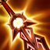

Tiradora
/
Asesina
Dificultad Moderada
HABILIDADES


PASIVA • SEGUNDA PIEL
Los ataques básicos de Kai'Sa acumulan Plasma, lo que inflige daño mágico adicional. Los efectos de inmovilización de sus aliados ayudan a acumular Plasma. Además, al comprar objetos, Kai'Sa puede mejorar sus hechizos básicos para que tengan propiedades más poderosas.
1 • LLUVIA DE ICATHIA
Kai'Sa desata una lluvia de misiles que buscan objetivos cercanos. Arma Viviente: mejora Lluvia de Icathia para lanzar más misiles.
2 • BUSCADORA DEL VACÍO
Kai'Sa dispara un misil de largo alcance que revela y marca a los enemigos con su pasiva. Arma Viviente: mejora Buscadora del Vacío para que aplique más marcas de Plasma y reduce su enfriamiento al impacto contra campeones.
3 • SUPERCARGA
Kai'Sa incrementa su velocidad de movimiento por un breve momento y después incrementa su velocidad de ataque. Arma Viviente: mejora Supercarga para otorgar Invisibilidad por unos instantes.
DEFINITIVA • INSTINTO ASESINO
Kai'Sa se desplaza cerca de un campeón enemigo marcado por Plasma y obtiene un escudo temporal.
CONFIGURACIÓN
OBJETOS
-

Espada del Rey Arruinado
3100+20 Daño de Ataque
+35% Velocidad de Ataque
SED: +10% de Vampirísmo Físico.
ATAQUES ARRUINADOS: Los ataques infligen daño físico adicional al impacto igual al 6% de la Vida actual del enemigo. (Los ataques cuerpo a cuerpo infligen 9%). Daño mínimo: 15. Máx. daño contra monstruos: 60.
DRENAR: Alcanzar a un campeón con 3 ataques o habilidades inflige de 30 a 100 de daño mágico y roba 25% de su Velocidad de Movimiento durante 2 seg. (60 seg de Enfriamiento). -

Espada de Carga Solari
3100+25% Tasa de Críticos
+30% Velocidad de Ataque
+15 Aceleración de Habilidad
RAYO SOLAR: Usar una habilidad acumula Resplandor (máx. 3 cargas) hasta por 10 seg. Al tener cargas acumuladas, obtiene un 25% de Tasa de Críticos. Los ataques que realizan golpes críticos usan una carga para infligir de 24 a 52 de daño mágico adicional al impacto, que aumenta hasta un 150% contra objetivos con poca vida.
Cada habilidad única solo puede generar una carga una vez cada 2 seg. -

Filo del Infinito
3400+55 Daño de Ataque
+25% Tasa de Críticos
INFINIDAD: Los golpes críticos infligen un 230% de daño en vez de 200%.
-

Recordatorio Mortal
2800+45 Daño de Ataque
ÚLTIMO SUSPIRO: +30% de Penetración de Armadura.
SEPSIS: Infligir daño físico aplica un 40% de Heridas Graves a campeones enemigos por 3 seg. Si está por debajo del 50% de Vida, este efecto aumenta a un 60% de Heridas Graves.
Heridas Graves reduce la efectividad de las curaciones y efectos regenerativos. -
Bailarín Espectral
2800+25% Tasa de Críticos
+35% Velocidad de Ataque
VALS ESPECTRAL: +5% de Velocidad de Moviemiento.
SALVAVIDAS: El daño mágico que te deje con menos del 35% de Vida otorga un escudo que absorbe de 240 a 590 de daño durante 5 seg. (90 seg de enfriamiento). -

Grebas Glotonas
1000CALZADO: +40 de Velocidad de Movimiento.
SEGUNDOS: +8% de Vampirísmo Físico.
TERCEROS: +8% de Vampirísmo Mágico.
CARRERA (ACTIVA): Aumenta la Velocidad de Movimiento un 15% durante 3 seg. Infligir o recibir daño de campeones desactiva los efectos de Carrera. (60 seg de enfriamiento). -

Encantamiento de Estasis
800ESTASIS (ACTIVA): Te vuelves invulnerable e inalcanzable durante 2.5 seg, pero no puedes moverte, atacar, lanzar habilidades ni utilizar objetos. (120 seg de enfriamiento).
RUNAS Y HECHIZOS
-
Conquistador
Obtienes acumulaciones de fuerza adaptable al atacar a un campeón con habilidades o ataques separados. Se acumula hasta 5 veces. Al alcanzar el máximo de acumulaciones, inflige daño adaptable adicional a campeones.
POR ACUMULACIÓN: 2 - 6 de Daño de Ataque adicional o 3 - 9 de Poder de Habilidad durante 6 seg.
EFECTO ADICIONAL CON EL MÁXIMO DE ACUMULACIONES: Cuerpo a cuerpo: 10% | A distancia: 7% de daño adaptable adicional a campeones. -

Brutalidad
Obtienes 7 de Daño de Ataque y un 2% de Penetración de Armadura o 14 de Poder de Habilidad y un 2% de Penetración de Magia (adaptable).
-

Cazador: Titán
Obtienes 20 de Vida Máxima. Los derribos de campeones únicos otorgan 20 de Vida Máxima Y 4% de Tenacidad.
-

Dulces Frutos
Aumenta la curación de Frutamiel en un 25%. Cada vez que tú o un aliado cercano coma una Frutamiel, obtienes 20 de oro.
-

Barrera
ENFRIAMIENTO: 120 seg.
Obtienes un escudo que absorbe 115 de daño (115-465) durante 2 seg. -

Destello
ENFRIAMIENTO: 150 seg.
Te teletransportas una distancia corta hacia delante o hacia la dirección objetivo.
CÓMO JUGAR KAI'SA
Kai'Sa es un campeón del carril de los dragones que se centra en el daño de ataque para matar al equipo enemigo . Kai'Sa no es la mejor al principio del juego porque tiene un rango de ataque automático corto. Cuanto más tarde va el juego y más elementos obtiene, más fuerte se vuelve. Kai'Sa tiene una Pasiva (Segunda Piel) única, cuando Kai'Sa compra artículos, sus habilidades básicas pueden mejorarse. Las más importantes en las que debes concentrarte son Lluvia de Icathia (primera habilidad), cuando se actualiza, la habilidad puede disparar más misiles. La otra mejora en la que debes concentrarte es Supercarga (tercera habilidad), cuando te actualizas te vuelves invisible cuando usas la habilidad.